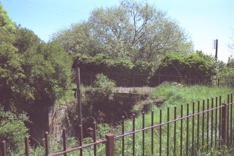
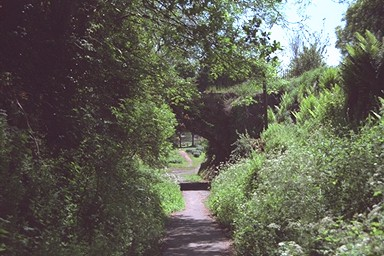
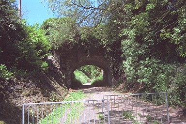

Seen from the top of the northern embankment.

Seen from the Wellington-Kidderminster toll road from the Wellington side...

... and from the Kidderminster side. This picture clearly shows the depth of stonework necessary for a depth of water. There was no parapet: the modern footpath, and the old water level, is at the top of the stone. The vegetation above hides a later iron railing fence.